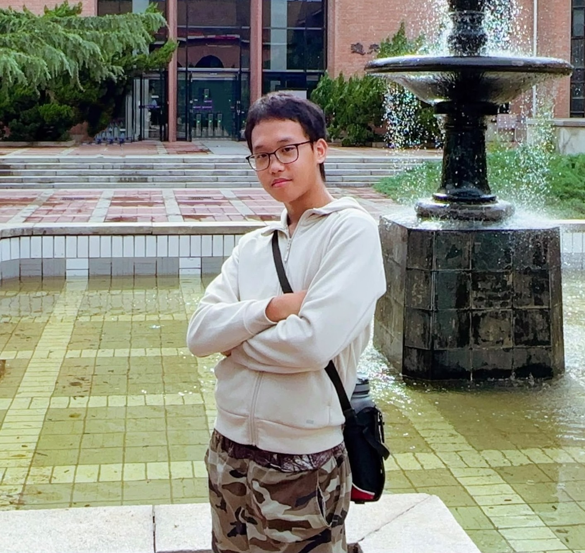

01 - Introduction
Hello! I am Wei Mingyang, a 17-year-old student at Hwa Chong Institution (Junior College) with a strong academic interest in Math, Science and Computing.
17 ◇ Singapore ◇ Student ◇ Hwa Chong Institution (Junior College)

Hello! I am Wei Mingyang, a 17-year-old student at Hwa Chong Institution (Junior College) with a strong academic interest in Math, Science and Computing.
Currently, I am interested in research and engineering. I actively explore the different fields of engineering, chemistry, physics and computing.
I also have a deep interest in music and hold an ABRSM diploma in piano performance. Music has cultivated my perseverance and creativity, shaping the way I look at obstacles and assisting in my academic pursuits.
I am always looking for opportunities to learn new things which challenge me to think deeper, or to gain hands-on experience in a field I am interested in.
Outside of work and study, you will most likely find me at the piano refining a piece, in front of my computer experimenting with new coding ideas, or seeking out new research and internship experiences.
Clays and clay minerals are important materials in geotechnical engineering, but their nanoscale behaviour under varying conditions remains insufficiently understood. In this project, the structural and behavioural changes of nanometre-sized clay particles were investigated under different water chemistry and physical conditions. The interactions between clay and natural and human-made materials—including organic matter, pollutants, heavy metals, and waste materials such as fly ash—were also examined. The nanoscale insights generated help inform laboratory experiments and larger-scale simulations, contributing to more sustainable geotechnical solutions such as improved waste containment systems and enhanced contaminant removal.
AI-generated media is increasingly difficult to distinguish from real content, and most AI-image detectors remain vulnerable to adversarial attacks. A Spectral AI-Generated Image Detector (SPAI) was evaluated against random noise, AnyAttack perturbations, and Diffusion Project Gradient Descent (Diff-PGD) attacks. Overall, results demonstrated that SPAI was highly susceptible to both traditional and modern adversarial manipulation, highlighting the need for more robust forensic detection systems as generative and adversarial techniques continue to evolve.
I worked on a research project with the guidance of Dr Zheng Xiaojin, an assistant professor at the Nanyang Technological University (NTU). I investigated the interactions between clay minerals and different natural materials such as organic matter, PFAS molecules and water.
I volunteered for Project Apricity, a community service initiative focused on tutoring Kent Ridge Secondary School (KRSS) students Mathematics.
I was a buddy with several students from the High School Affiliated to SUSTech (HSAS) in China, providing guidance and support as we explored the applications of artificial intelligence in various fields.
I participated in an internship at Defense Science and Technology Agency (DSTA), where I worked on this project. I examined how variations in input images, such as adversarial perturbations, affect the reliability and consistency of machine learning detection models, aimed at improving future detection systems.
I was part of the Organising Team for the Asia-Pacific Mathematical Olympiad for Primary Schools (APMOPS) event hosted by Hwa Chong Institution, executing various tasks and guiding participants from different countries to ensure the event's success.
I was part of the Organising Team for Project Elderlink, a community service initiative focused on educating the elderly about digital literacy, such as smartphone usage and scams.
I was the Chinese Emcee for Hwa Chong Institution's School-Based National Day Parade for 2 years, requiring me to utilise my performance skills to engage the audience and represent the school with pride.
I participated in a school immersion program in Shenzhen, China, where I engaged with students and educators from the High School Affiliated to SUSTech (HSAS) to foster cross-cultural understanding and collaboration.
This role involved planning and executing physical training programmes for the Hwa Chong Institution National Cadet Corps (HCI NCC) badge mates and juniors.